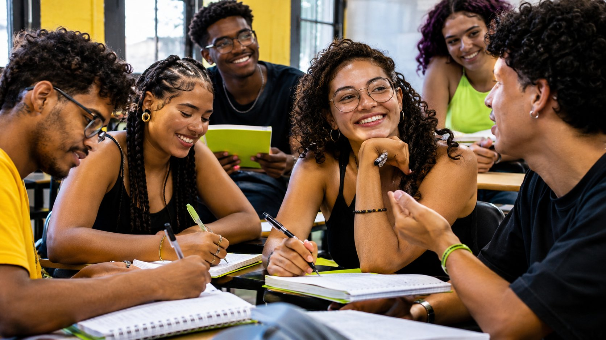
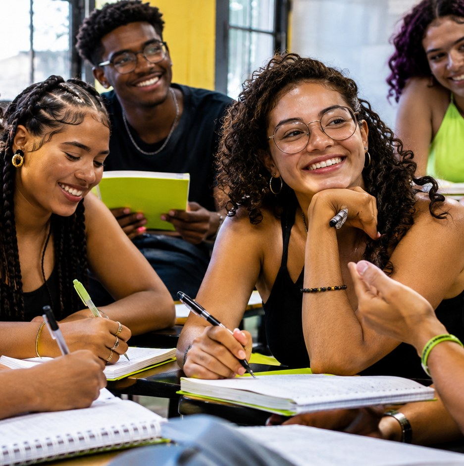
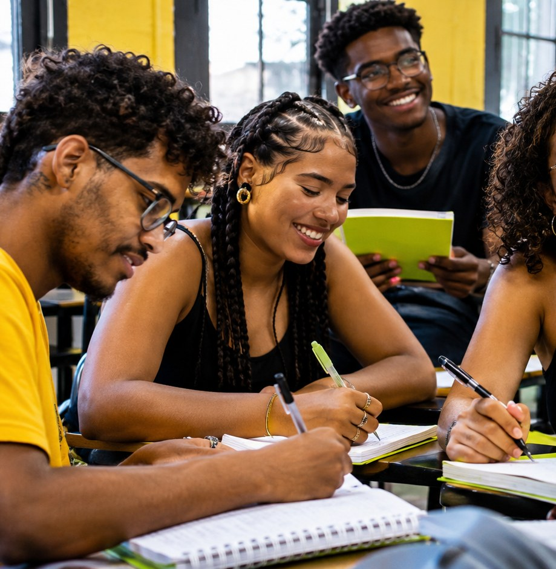
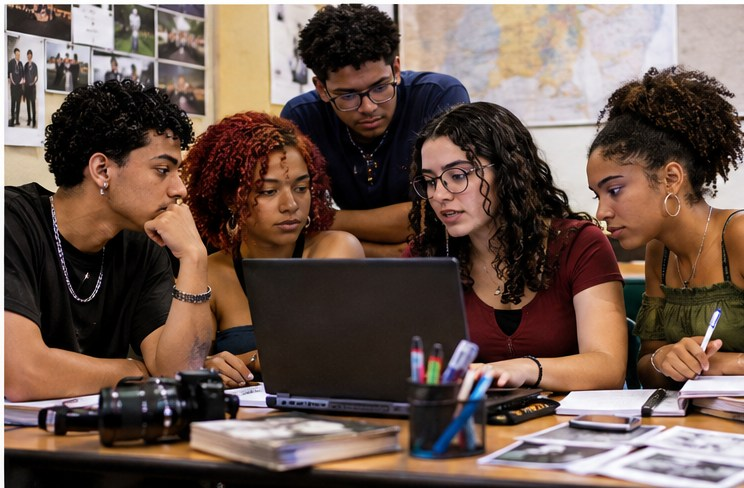
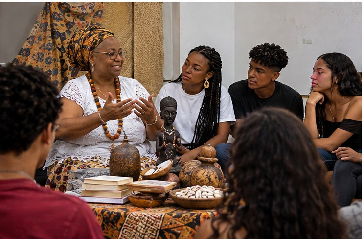
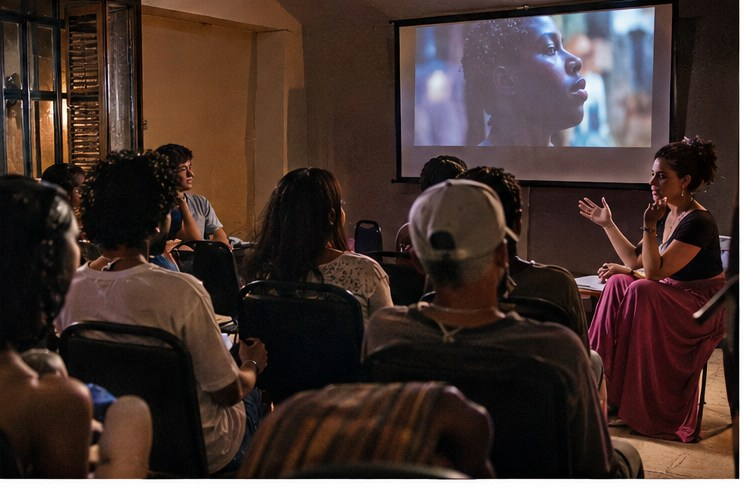

Solicitação de certificado
Solicite seu certificado referente às atividades de 2026. A emissão está condicionada à validação dos registros de participação.
Solicitar certificadoA educação pode abrir caminhos muito maiores do que uma aprovação. ENEM, PISM, cultura, pensamento crítico e construção coletiva.
Faça parte da Rede
Participe das atividades de encerramento da Rede EducaPOP e contribua para a construção de 2027.
Solicite seu certificado referente às atividades de 2026. A emissão está condicionada à validação dos registros de participação.
Solicitar certificadoSua opinião é importante para construirmos uma Rede EducaPOP ainda melhor em 2027.
Responder avaliaçãoA avaliação do curso é voluntária e independente da solicitação de certificado.
Em futuras etapas, este espaço poderá reunir:
A Rede EducaPOP conecta educação popular, cultura, comunicação e oportunidades de aprendizagem no Noroeste Fluminense. Aprendemos com os territórios e com as experiências de quem participa.
Conheça nossa história
ENEM · PISM · OUTROS PROCESSOSGratuito, com encontros presenciais aos sábados e intervenções pedagógicas on-line durante a semana.
Conhecer mais
APRENDER É DESCOBRIRUma proposta de acompanhamento pedagógico para crianças do 1º ao 5º ano. Valor social a definir.
Conhecer maisA aprendizagem começa com as perguntas, as histórias e os saberes dos estudantes.
Relacionamos os conteúdos com a vida cotidiana e a realidade social.
O conhecimento cresce quando aprendemos juntos.
Estamos desenvolvendo dois volumes próprios para acompanhar a jornada dos estudantes: o Meu Ano EducaPOP 2027 (Volume 1) e o Saberes em Ação 2027 (Volume 2).
Imagem de apresentação do material em desenvolvimento. A disponibilização será comunicada posteriormente.
Conheça os volumes

Jornalismo e comunicação.
Conhecer mais
Memória e identidade.
Conhecer mais
Criatividade e reaproveitamento.
Conhecer mais
Cinema e reflexão.
Conhecer maisNoroeste Fluminense · RJ
Noroeste Fluminense · RJ
Noroeste Fluminense · RJ
Endereços, horários e oferta de vagas para 2027 serão informados oficialmente.
Escolha entre o pré-vestibular gratuito, o Fundamental I e os projetos culturais e educativos.
Ver caminhos de participação